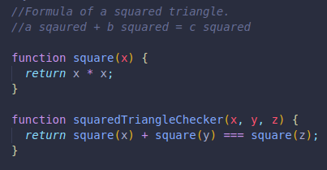

It works like a regular stack of physical objects.
Last in (top), first out(top)
Here we have an example of a function, which calls another function in order to provide a boolean result.
The squared triangle checker function needs to run the aquare function 3 times in order to determine if the arguments we provide are true or false in accordance to what a square triangle is.(one right angle)
If we passed in 3,4 and 5...
It checks for if this expression is either true or false -->
(square(3) + square(4) === square(5);)
It will:
SO if we have code that runs before and after, like simple console logs, and we are in the middle of running our function with these values, we would see the message we ran before the function already printed in the console, but the one we have after the function would have to wait until the function completely finishes to appear in the console too.